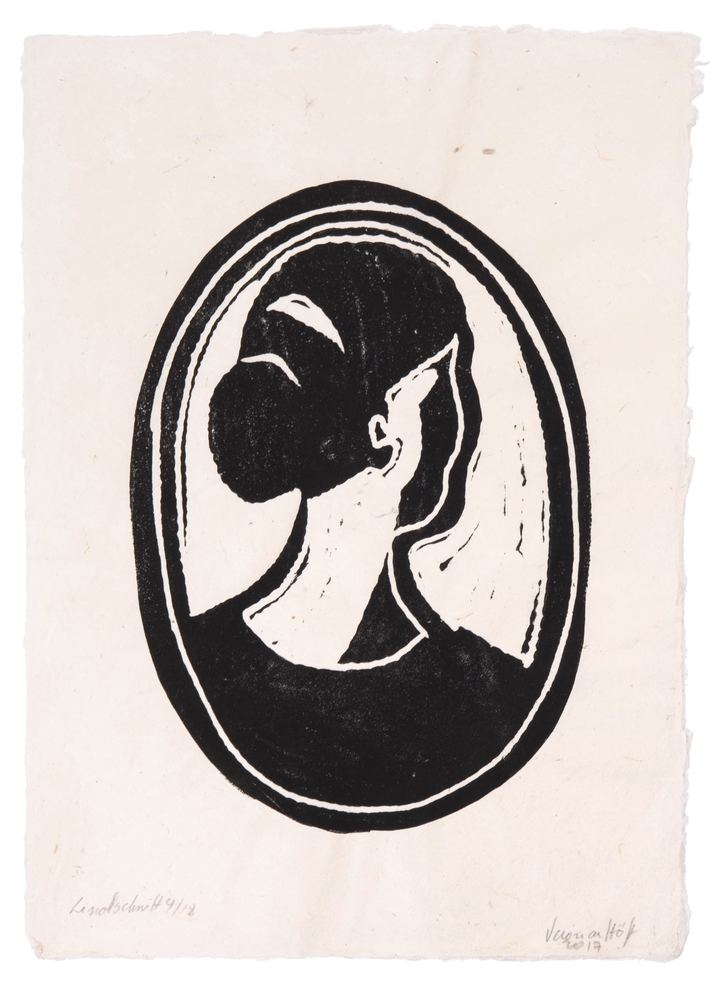

Die Künstlerin
Biografie

Geboren 1967 in Chile, studierte ich Kunst an der Universität Concepción und schloss 1991 als beste Absolventin meines Jahrgangs ab. 1994 kam ich nach Deutschland. Seit 2004 unterrichte ich Kunst an einem Gymnasium und arbeite in der Ateliergemeinschaft Leske-Höft-Winter in Bad Kreuznach – mit einem Schwerpunkt auf Holz- und Linolschnitt.
Vita
- 1967
- in Chile geboren
- 1990–1991
- Assistentin der Fächer Malerei II, Zeichnung II und Produktgestaltung an der Fakultät für Kunst der Universität Concepción
- 1991
- Abschluss des Studiums Kunst für Lehramt an der Universität Concepción, Chile, mit Auszeichnung als beste Absolventin des Jahrgangs
- 1991–1992
- Kunstprojekt für Kinder Talleres poblacionales de plástica infantil der Kulturabteilung des regionalen Regierungsbezirks, Concepción, Chile
- 1992–1993
- Kunstlehrerin am Gymnasium Kingston College, Concepción, Chile
- 1994
- Übersiedlung nach Deutschland, Rheinland-Pfalz
- 1995
- Heirat mit Michael Höft
- 1995–1996
- Deutsch als Fremdsprache an der Johannes Gutenberg-Universität Mainz für den Hochschulzugang ausländischer Studienbewerber
- 1996
- Geburt des ersten Kindes
- 1997–1999
- Studiengänge in Pädagogik, Kunstgeschichte und Romanischer Philologie
- 1998
- Geburt des zweiten Kindes
- 2000–2004
- Erziehungspause
- 2002
- Geburt des dritten Kindes
- seit 2004
- Kunstlehrerin am Gymnasium der Alfred-Delp-Schule Hargesheim
- seit 2004
- Künstlerische Tätigkeit in der Ateliergemeinschaft Leske-Höft-Winter, Bad Kreuznach
- seit 2019
- Ehrenamtliche Arbeit als Beisitzerin im Künstlerbahnhof Ebernburg e. V., Verein zur Förderung von Kunst und Kultur